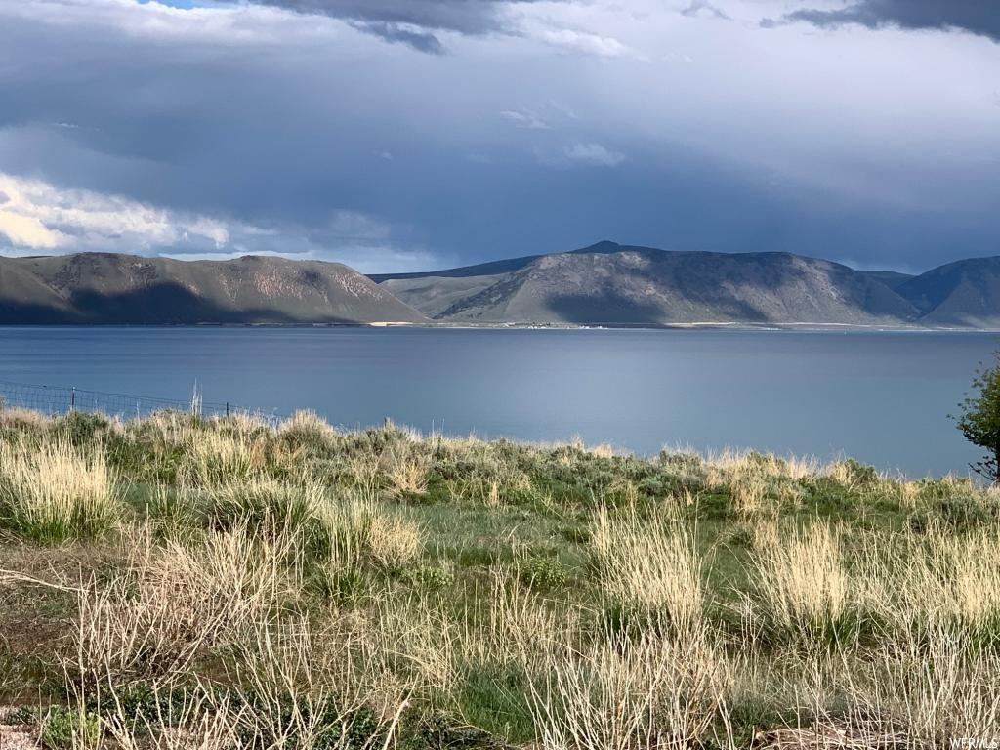

Article
by Consuelo Hansen
 Fish Haven is the most amazing place to be with the family during winter time. They have lots of concerts and family frinedly activities, like scavenger hunts
and karaoke.
This past weekend I was there with my famiy, we went to a concert of a local music group and they had a fire place and smores. Is a really good place to enjoy some family time and the fresh air.
Other great activities
that they have during the day and in summer is competitions in the lake where they do some competitions by age range, which is really nice so you can make new friends and enjoy meeting new people for different places.
My favorite
part is the food trucks that they have after the competitions, they have a picnic area where you can take naps and eat, and enjoy you vacations.
Also, they have a lot of places where you can do hiking and camping with no signal so
you can just focus on spending time with your close friends and family.